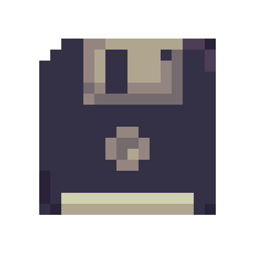

Fransuelton Francisco
Desenvolvedor Frontend
-

-

- 
Sobre
Oi! meu nome é Fransuelton, seja bem-vindo(a)!
Tenho 18 anos e Sou apaixonado pela programação.
faço curso técnico de T.I com ênfase em Redes de Computadores no IMD/UFRN.
Sempre tive o sonho de trabalhar com programação e atualmente comecei a colocar esse sonho em prática estudando
HTML, CSS e Javascript.
Gosto muito de café (até demais), e meus principais hobbies são
jogar Video-Game, Ouvir Música e Assistir filmes e séries.